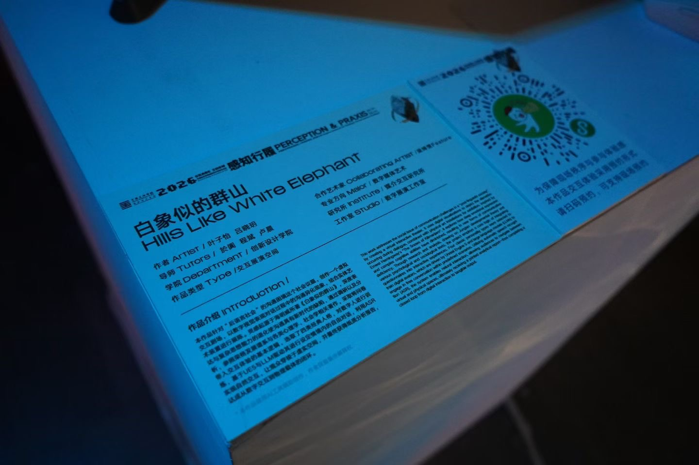
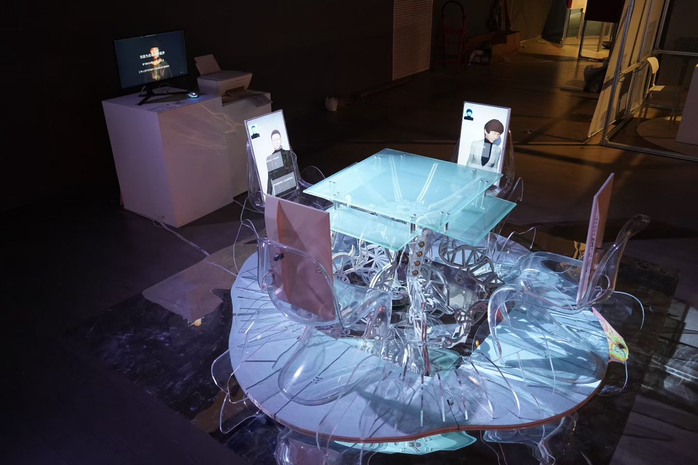

002
Hills Like
White Elephants
China Academy of Art
Program / Role
Created in 2026 with China Academy of Art students Ziyi Ye and Xiaoyue Lue, this interactive multimedia project draws on Ernest Hemingway’s story and the tension between what is said and left unspoken. In each two-minute session, the audience takes part in a role-play conversation with an LLM character while music and animation are generated in real time.
I served as the primary composer and music director, composing, arranging, and producing five original songs for the work.



Music
Original score
00:00--:--